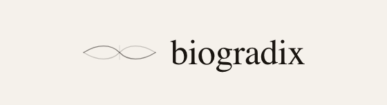

HOW CHEEKZ WORKS
THREE LAYERS. ONE PURPOSE.
ASSEMBLED VIEW
CHEEKZ™ / TD-IntelGel™
Preparing the patch…
Auto-rotate
Reset view
DRAG TO ROTATE
·
SCROLL TO ZOOM
·
CLICK TO INSPECT
EXPLODED VIEW
Discover each layer.
Explore layers
↗
Assembled
Exploded
0%